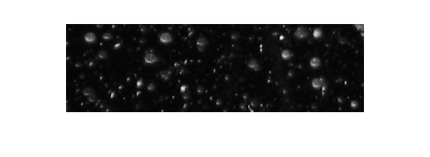
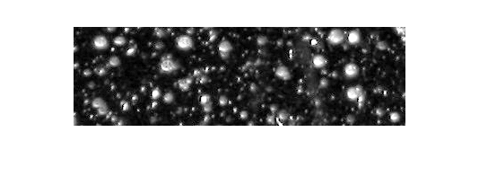
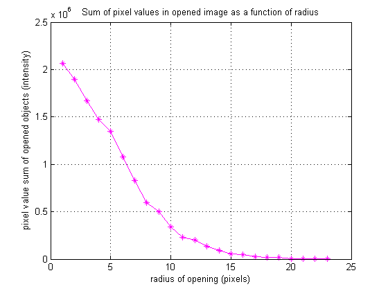
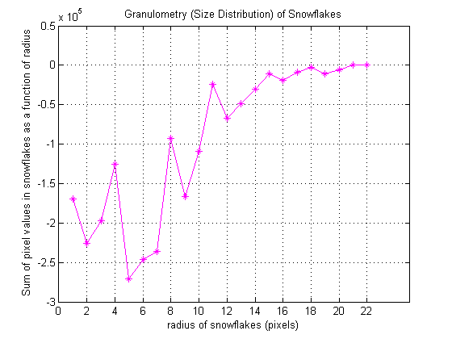
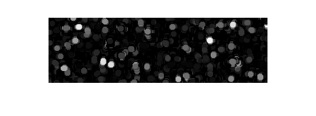

雪片の粒度分布
粒度分布は、最初に各オブジェクトを明示的に区分 (検出) せずにイメージ内のオブジェクトの大きさの分布を決定します。目的は、イメージ内の雪片の大きさの分布を計算することです。
目次
イメージの読み込み
イメージ 'snowflakes.png' を読み込みます。これは雪片の写真です。
I = imread('snowflakes.png');
figure,imshow(I)
 コントラストの強調
最初の手順は、イメージの強度コントラストの最大化です。コントラストに制限を付けた適応ヒストグラム均等化を実行する ADAPTHISTEQ を使用して、実行できます。データ タイプの全ダイナミック レンジを満たすように、IMADJUST を使用してイメージ強度を再スケーリングします。
claheI = adapthisteq(I,'NumTiles',[10 10]);
claheI = imadjust(claheI);
imshow(claheI);
 強調したイメージの表面積強度分布の決定
粒度分布は、雪片の表面積強度分布をサイズの関数として推定します。粒度分布は、イメージ オブジェクトを、サイズが増大するろ過器を通してふるい分けし、各パス後の残りを収集することによりサイズを決定できる石になぞらえます。イメージ オブジェクトは、サイズ増大の構造体要素でイメージをオープン、オープン後で残りの表面積強度 (イメージでのピクセル値の総和) を数えることによりふるい分けられます。
構造体要素のサイズを増大させると表面積強度がゼロになるように、カウンターの制限を選択します。表示目的のために、表面積配列の最初のエントリは空白にします。
for counter = 0:22 remain = imopen(claheI, strel('disk', counter)); intensity_area(counter + 1) = sum(remain(:)); end figure,plot(intensity_area, 'm - *'), grid on; title('Sum of pixel values in opened image as a function of radius'); xlabel('radius of opening (pixels)'); ylabel('pixel value sum of opened objects (intensity)');
分布の 1 次導関数の計算
2 回連続したオープン処理間で表面積強度が大幅に下がる場合は、イメージに小さいオープン処理と同じようなサイズのオブジェクトがあるということです。これは、表面積強度配列の 1 次導関数と同じで、イメージに雪片のサイズ分布を含んでいます。DIFF 関数で 1 次導関数を計算します。
intensity_area_prime= diff(intensity_area); plot(intensity_area_prime, 'm - *'), grid on; title('Granulometry (Size Distribution) of Snowflakes'); set(gca, 'xtick', [0 2 4 6 8 10 12 14 16 18 20 22]); xlabel('radius of snowflakes (pixels)'); ylabel('Sum of pixel values in snowflakes as a function of radius');
特定の半径を持つ雪片の抽出
グラフの極小値とその半径の値に注意してください。極小値は、その半径を持っている雪片が多いことを通知します。最小ポイントが負になると、その半径での雪片の累積強度が大きくなります。たとえば、負の最小ポイントは、5 ピクセルの半径マークで発生します。5 ピクセルの半径を持つ雪片を、次の手順で抽出できます。
open5 = imopen(claheI,strel('disk',5)); open6 = imopen(claheI,strel('disk',6)); rad5 = imsubtract(open5,open6); imshow(rad5,[]);